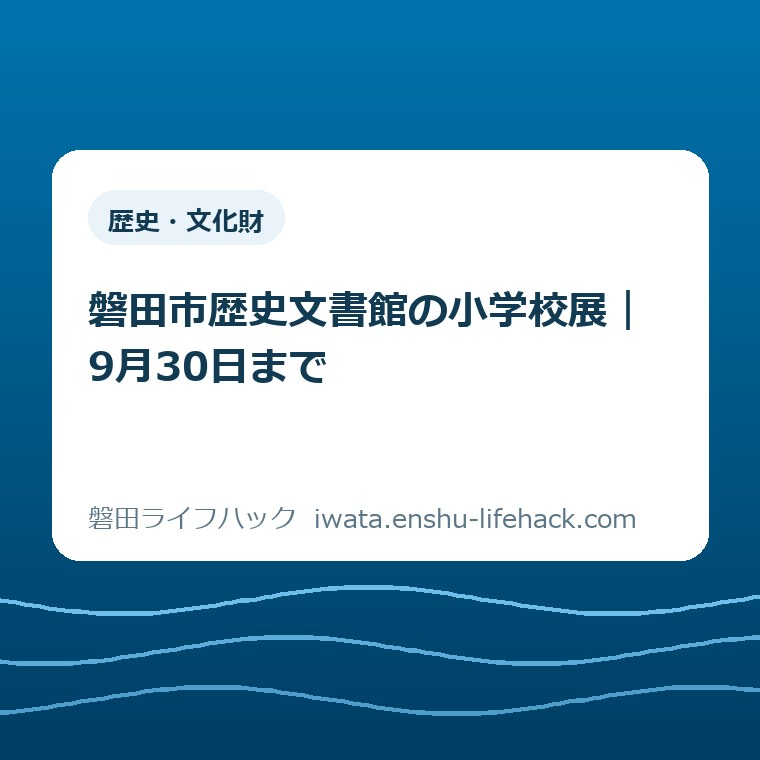

歴史・文化財
磐田市歴史文書館の小学校展｜9月30日まで

この記事の要点
Q. 親と小学校展へ行くなら、いつ、どこへ行けばいい？
A. 磐田市歴史文書館の小学校展は、竜洋支所内で2026年9月30日まで。昭和40～60年代の学校風景や行事を紹介します。無料・申込不要、9～17時、入館は16時30分までです。土日祝は休館。家族で行ける平日を一つ選び、出発前に市公式で確認してください。
家族で出かける日は、展示を見る前から始まっている
親と小学校展へ出かける予定は、展示の名前を知っただけでは決まりません。仕事を切り上げる人、車を出す人、夕食の支度をする人。それぞれが、外出のために時間を動かしています。子どもも一緒なら、学校から帰る時刻も重なります。
磐田市の歴史文書館で開かれている小学校展は、家族の昔話を始める入口になります。ただし、利用条件や必要な配慮は、来館日やご家族の事情で変わります。制度や施設の一般案内だけで、その家族が無理なく利用できると決めつけないことが出発点です。
大石浩之（磐田市／不動産業）として、この記事では見どころの数より、行ける日を決める順序に目を向けます。外出調整を担う人の手間を、「無料だから気軽に」の一言で片づけたくありません。入館料がなくても、往復の時間は家族が用意するからです。
本記事は現地訪問記ではありません。2026年9月16日に磐田市の開催案内、展示一覧、施設ガイドを照合しています。確認できた条件と、私が提案する見方・段取りを分けて書きます。展示室で実際に交わされた会話や、見たことのない展示物は作りません。
小学校展の開催条件を、一枚の予定に置き換える
磐田市の開催案内による正式名称は、歴史文書館平常展「懐かしの小学校～昭和の終わり～」です。会場は磐田市岡729-1の竜洋支所内、歴史文書館1階。2026年3月30日から9月30日まで開催されます。
| 項目 | 市公式の案内 |
|---|---|
| 会期 | 2026年3月30日（月）～9月30日（水） |
| 時間 | 9時～17時／入館16時30分まで |
| 休館 | 土曜・日曜・祝日 |
| 会場 | 歴史文書館1階（竜洋支所内） |
| 料金・申込み | 無料・申込不要／対象はどなたでも |
| 問い合わせ | 歴史文書館 0538-66-9112 |
開催案内の更新日は2026年7月9日です。8月31日更新の「文化財課展示・イベント情報」にも、1階の小学校展は9月30日までと掲載されています。古い紹介文だけを頼りにせず、二つの市公式ページで会期が一致することを確かめました。
家族へ伝えるときは、「市の学校展」だけでは会場を取り違えます。「竜洋支所の中の歴史文書館1階」と、施設名まで続けて伝えるのが私の提案です。見付の学校施設でも、市役所本庁舎でもありません。地図に入れる住所は岡729-1です。
施設ガイドでは、歴史文書館の駐車場は竜洋支所と共用とされています。展示専用の駐車場所を想定せず、当日の案内表示に従います。支所の位置関係を整理するなら、磐田市の4支所を確認する記事も参照できます。展示を見ることと窓口の手続きは、別の用件として考えます。
同じ歴史文書館の2階では、9月30日まで「史料を遺す」展も開かれています。古文書のデジタル化と、家の古い記録を残す意味を考える記事では、原本・画像・説明の役割を整理しました。
9月後半は「月末まで」より、行ける日を数える
2026年9月16日から9月30日までの間で、土日と祝日・休日を除く平日は8日です。16日（水）、17日（木）、18日（金）、24日（木）、25日（金）、28日（月）、29日（火）、30日（水）が、予定を相談する候補になります。
国立天文台の2026年暦要項では、9月21日が敬老の日、23日が秋分の日です。間の22日も休日と明記されています。「火曜日なら平日」と思い込まないよう、この記事の候補から22日を外しています。これは予定調整用の整理で、館が公表した個別の開館カレンダーではありません。
9月22日の扱いを含め、連休中の利用を考える場合は歴史文書館に直接確認してください。市の開催案内は「土・日・祝日は休館」という表記です。月曜から金曜という曜日だけで訪問を決めると、祝日や休日との重なりを見落とします。
9月16日にこの記事を読む場合でも、16日に行く必要はありません。午前中の予定が埋まっている人や、親へ連絡できるのが夕方になる人もいます。残りの日数を締切への圧力にせず、家族が動ける日を見つけるために使いたいと私は考えます。

候補が一つ決まったら、「午後に行く」より到着の目標時刻まで置くと調整しやすくなります。たとえば15時到着を家族の仮予定にする方法です。15時は市が推奨する来館時刻ではなく、入館締切ぎりぎりを避けるための計画例です。
17時まで開いていることと、17時まで入れることは別です。入館は16時30分まで。車を降りる時刻や建物に着く時刻ではなく、館へ入る時刻を基準にします。下校後に子どもを連れて行く場合は、学校からの帰宅と移動を足して間に合うかを見ます。
昭和100年の展示でも、昭和初期だけの話ではない
磐田市の開催案内では、昭和元年の1926年から起算して満100年となる節目に、館所蔵の資料を使うと説明しています。取り上げるのは昭和40年代から昭和60年代の小学校の風景や行事です。昭和の始まりだけを振り返る展示ではありません。
昭和という一語から、祖父母だけの時代を思い浮かべる人もいるかもしれません。しかし、案内されている年代は昭和の後半です。家族の誰がそのころ小学生だったかを考えると、遠い歴史と受け止めていた題材が、親自身の通学や行事の記憶に近づきます。
私は、展示の前に予習の問題を作る必要はないと考えます。むしろ「学校へは誰と歩いていた？」と一つ聞くくらいがよい。展示の説明をすべて読むことより、その人が何を覚えているかを聞ければ、家族で出かけた意味が生まれます。これは見学方法についての私の提案です。
会話の糸口には、登下校、教室での過ごし方、行事の日の準備などがあります。ここで挙げる話題は展示物の一覧ではありません。実際にどの学校のどんな資料が並ぶかは、開催案内の本文だけでは分かりません。思い出の校名が必ず見つかるとは約束できません。
親が話す内容と展示の年代が食い違っても、その場で正解を競う必要はないと思います。「自分の学校では違った」という記憶も、家族の話として聞けます。一方で、その記憶を磐田市内すべての小学校に共通する事実として広げない。この線は残しておきたいところです。

学校という題材を別の機会にも訪ねたい方には、旧見付学校の駐車場と見学順の記事があります。今回の小学校展とは会場が異なります。学校に関する場所だからと同じ施設のつもりで向かわず、次の外出候補として分けて保存すると混乱を防げます。
移動と帰宅を先に置き、見学時間を決めつけない
小学校展の標準見学時間は、今回確認した市公式の開催案内には示されていません。展示点数や説明を読む速さが分からないまま、「30分で十分」と予定を固定するのは避けたいところです。親と話しながら見る時間も、人によって変わります。
私なら、先に家へ戻りたい時刻を決めます。帰りに買い物をするならその分も含め、館を出る目安を逆算します。そのうえで移動と見学の時間を取れるかを見る。展示に合わせて夕方の用事を全部押し込むより、帰宅後の負担が見える決め方です。
運転する人と同行する人が別なら、迎えの場所と帰りの降車場所まで共有します。住所を保存した人だけが道順を知っている状態を避けるためです。館内で疲れたときには先に帰ることも、予定を作る段階で話しておくと、最後まで見なければという気負いを減らせます。
歩行や移動に配慮が必要な場合、必要な設備が使えるかは個別に確認します。施設ガイドの案内と当日の利用状況は同じとは限りません。「車から展示室までの移動で手助けが必要」など、困る場面を具体的に伝えると、確認する内容が定まります。
問い合わせは、展示案内に掲載された歴史文書館の0538-66-9112が窓口です。聞きたいことがある人は、候補日と到着の目安を添えます。撮影したい資料がある場合も、撮影の可否をこの記事で決めず、会場の掲示や館の案内に従ってください。
文化施設へ行くときの確認先を探したい場合は、文化施設の開館日・アクセスを確認する案内が入口になります。本記事は予約や手続きの網羅ではなく、9月末の小学校展へ家族で行くための時間調整に絞っています。
良い点——予約を先に確定しなくてよい
小学校展の良い点として私が評価するのは、無料・申込不要という開催条件です。市公式でこの二つが明記されていれば、家族の体調や仕事の見通しが立ってから候補日を決められます。予定を固める前に申込枠を確保する作業がありません。
入館料がかからないことは、親だけで行くか、子どもも一緒に行くかを相談しやすくします。同行者が変わっても入館料を人数分計算し直す必要がありません。ただし、車や公共交通で移動する費用まで無料になるという意味ではありません。
予約の手間がないことは、出かける日の朝に予定を見直せる余地にもなります。私は、こうした小さな余地を評価します。家族との外出では、見どころの魅力だけでなく、予定どおりに動けなかったときに組み直しやすいかも、利用しやすさの一部だからです。
学校風景という共通の話題があることも、私には良い点です。歴史の知識を披露する場にせず、「自分の学校ではどうだったか」から話せます。展示の価値を大きな言葉で説明するより、家族が一つ話せる題材として捉えたいと考えます。
注文したい点——残りの開館日が一目で分かると助かる
小学校展の案内に注文したい点は、会期末の訪問候補がその場で分かる表示です。開催案内の本文には会期と休館条件が載っていますが、9月後半の各日が一覧になっているわけではありません。家族の予定を決める人が、別の暦と照らし合わせる作業を担っています。
私は、会期末だけでも開館日を並べる案内があると助かると考えます。特に2026年9月22日のような休日を、普通の火曜日と取り違えずに済みます。これは休館日の変更を求める話ではなく、すでに決まっている利用条件を読み取りやすくする提案です。
入館締切を閉館時刻と並べて掲載している点は、そのまま残してほしい。家族へ画面を送るときも、16時30分と17時を一緒に見られるからです。時刻の意味が違うことを、予定を組む人が説明し直さずに済む表示には実利があります。
職員の方が個々の家族の予定まで引き受けることはできません。だからこそ、共通して必要な日付と時刻が見つけやすいと、来館者にも案内する側にも助けになります。新しい催しを増やすことより、今ある展示にたどり着く手間を減らす案内を、私は望みます。
大石の視点——無料でも、家族の段取りは無料にならない
小学校展について、私はこう考えます。無料でも、家族が予定を合わせる手間は無料にならない。迎えに行く人、留守番を引き受ける人、仕事を調整する人の時間を数えてから、「行けそう」と言いたいのです。入館料だけで外出の軽さを判断しません。
正直に言えば、平日だけの展示を家族向けに勧めてよいのか、私は迷います。平日に仕事を休みにくい人も、子どもの帰宅を待つと間に合わない人もいるからです。家族の記憶を聞く機会としての魅力と、行ける人が限られる時間帯の両方を、この記事に残すことにしました。
親と出かける意味を、必ず感動することや、貴重な話が聞けることに置くつもりもありません。昔の学校を懐かしむ人もいれば、話したくない人もいます。「覚えていない」という答えを受け止めて、展示を静かに見るだけでもよい。会話の成果を求めすぎない見学を私は選びたいです。
帰宅してから何か残すなら、親が口にした言葉を一行だけ、本人の了解を得て記す方法があります。展示説明の丸写しではなく、家族の記憶として残すものです。撮影や記録を優先して目の前の人の話を聞きそびれるなら、メモを取らない選択もあります。
対案・結論——今日は行ける平日を一つ選ぶ
小学校展へ行くために2026年9月16日にできる一歩は、家族で行ける平日を一つ選び、磐田市公式の開催案内で確かめることです。候補を全部埋める必要はありません。日付が一つ決まれば、迎えや帰宅の相談を具体的に始められます。
予定表には、日付に加えて「歴史文書館1階・竜洋支所内」「入館16時30分まで」と公式ページのリンクを添えます。家族に口頭で伝えた内容を、後から同じ画面で確かめられる形にするためです。時刻を変えるときも、そのメモを基準に相談できます。
平日の候補が合わなければ、小学校展のために無理に予定を崩す必要はありません。別の展示を探すときは、中原B古墳群展の会場と行き方の記事もあります。ただし、歴史文書館とは会場も休館条件も異なるため、各展示の公式案内を別々に確認します。
家族が同じ日に集まれなくても、学校時代のことを電話で一つ聞くことはできます。展示へ行けるかどうかだけで、家族の時間が成功か失敗かに分かれるわけではありません。今回は行けないと分かったなら、その判断も予定を組むための成果だと私は考えます。
会期末に慌てて出発するより、行ける日を一つ選んでおく。見学時間を保証する数字は置かず、帰宅までを家族の予定に入れる。小学校展を生活に無理なく組み込むために、私が提案する順番です。出発前の最終確認は、磐田市の公式ページで行ってください。
小学校展のよくある質問
小学校展の会期、休館日、料金について、2026年9月16日に確認できた内容を整理します。個別の利用条件と最新情報は市公式で確認してください。
小学校展はいつまで、どこで開かれていますか？
磐田市歴史文書館の平常展「懐かしの小学校～昭和の終わり～」は、2026年9月30日までです。会場は磐田市岡729-1、竜洋支所内の歴史文書館1階です。昭和40～60年代の学校風景や行事を扱います。旧見付学校とは別の施設なので、住所と会場名を保存し、出発前に市公式で確認してください。
土日や祝日にも小学校展を見られますか？
市の開催案内では土曜・日曜・祝日は休館です。開館時間は9時から17時で、入館は16時30分までです。2026年9月22日も暦上の休日のため、この記事では訪問候補から外しています。連休中の扱いなど不明な点は歴史文書館へ確認し、単に月曜から金曜という曜日だけで来館日を決めないでください。
料金や予約、見学時間の目安はありますか？
小学校展は無料・申込不要で、対象はどなたでもです。標準的な見学時間は、確認した市公式の開催案内には載っていません。親と話しながら見る時間や移動の負担は家族によって変わります。短時間で見終わると決めつけず、帰宅の目安を先に置き、必要な配慮や撮影の可否は歴史文書館へ確認してください。
参考にした公式情報
- 磐田市：歴史文書館平常展「懐かしの小学校～昭和の終わり～」（2026年9月16日確認）
- 磐田市：文化財課展示・イベント情報（2026年9月16日確認）
- 磐田市：施設ガイド 歴史文書館（2026年9月16日確認）
- 国立天文台：2026年暦要項 国民の祝日（2026年9月16日確認）

最終確認日：2026-09-16 ／ 本記事は公表情報と執筆者の見解を分けて記載しています。制度・数値・公開状況は変更される場合があるため、最新情報は磐田市公式ページでご確認ください。